Last updated: 2019-12-06
Checks: 6 1
Knit directory: rna-seq-dhx38/analysis/
This reproducible R Markdown analysis was created with workflowr (version 1.5.0). The Checks tab describes the reproducibility checks that were applied when the results were created. The Past versions tab lists the development history.
The R Markdown file has unstaged changes. To know which version of the R Markdown file created these results, you’ll want to first commit it to the Git repo. If you’re still working on the analysis, you can ignore this warning. When you’re finished, you can run wflow_publish to commit the R Markdown file and build the HTML.
Great job! The global environment was empty. Objects defined in the global environment can affect the analysis in your R Markdown file in unknown ways. For reproduciblity it’s best to always run the code in an empty environment.
The command set.seed(20191126) was run prior to running the code in the R Markdown file. Setting a seed ensures that any results that rely on randomness, e.g. subsampling or permutations, are reproducible.
Great job! Recording the operating system, R version, and package versions is critical for reproducibility.
Nice! There were no cached chunks for this analysis, so you can be confident that you successfully produced the results during this run.
Great job! Using relative paths to the files within your workflowr project makes it easier to run your code on other machines.
Great! You are using Git for version control. Tracking code development and connecting the code version to the results is critical for reproducibility. The version displayed above was the version of the Git repository at the time these results were generated.
Note that you need to be careful to ensure that all relevant files for the analysis have been committed to Git prior to generating the results (you can use wflow_publish or wflow_git_commit). workflowr only checks the R Markdown file, but you know if there are other scripts or data files that it depends on. Below is the status of the Git repository when the results were generated:
Ignored files:
Ignored: .Rhistory
Ignored: .Rproj.user/
Untracked files:
Untracked: analysis/20191206_DifferentialSplicingControl.Rmd
Untracked: data/sf3b1_data/
Untracked: output/DiffSplicingRegions.bed
Unstaged changes:
Modified: analysis/20191203_DifferentialSplicing.Rmd
Modified: analysis/index.Rmd
Note that any generated files, e.g. HTML, png, CSS, etc., are not included in this status report because it is ok for generated content to have uncommitted changes.
These are the previous versions of the R Markdown and HTML files. If you’ve configured a remote Git repository (see ?wflow_git_remote), click on the hyperlinks in the table below to view them.
| File | Version | Author | Date | Message |
|---|---|---|---|---|
| Rmd | 98a59fa | Benjmain Fair | 2019-12-04 | update site |
| html | 98a59fa | Benjmain Fair | 2019-12-04 | update site |
| Rmd | 0d7521b | Benjmain Fair | 2019-12-04 | update site |
| html | 0d7521b | Benjmain Fair | 2019-12-04 | update site |
| Rmd | c1d660d | Benjmain Fair | 2019-12-04 | initialize site |
| html | c1d660d | Benjmain Fair | 2019-12-04 | initialize site |
Exploratory differential expression analysis comparing RNA-seq from iPSC derived neurons from healthy control vs patient with biallelic mutations in DHX38 that may affect splicing and gene expression. Some things I want to check is what kinds of gene sets are differentially spliced, as well as if there are certain intron features associated with differentially spliced introns (weaker 5’ss motif perhaps)
Raw RNA-seq data has been aligned and collapsed into leafcutter splice junction count table (rows of introns, columns of samples, each cell is exonic read counts) using code in code section of this repo. Also, leafcutter has been run to identify differentially spliced clusters of splice junctions, creating output files in output. Here I will explore that output and maybe some other exploratory analyses.
First, load necessary libraries
library(tidyverse)
library(knitr)
library("clusterProfiler")
library("org.Hs.eg.db")
library(enrichplot)
library(psych)
library(corrplot)load in leafcutter output. leafcutter clusters overlapping introns and analyzes all introns within a cluster and jointly tests them for differential splicing. This analysis is intron-centric (So if there is an increase in an exon-skipping event, that will be listed as a decrease in splicing of the flanking introns, and increase in the splicing of the intron-exon-intron junction). Each intron gets an estimated effect size difference between affected and healthy (which can be communicated logef or delta-psi), a estimate of the splicing fraction (number of junctions for a particular intron divided by total junctions in the cluster) and each cluster gets a P-value for whether these effect size differences are significant.
sig <- read.table("../output/differential_splicing_significance.txt.gz", sep='\t', header=T)
head(sig) %>% kable()| cluster | status | loglr | df | p | p.adjust | genes |
|---|---|---|---|---|---|---|
| chr1:clu_1000_- | Success | 1.9730317 | 1 | 0.0469812 | 0.1628228 | GNB1 |
| chr1:clu_1001_- | Success | 0.2795714 | 2 | 0.7561078 | 0.8609193 | GNB1 |
| chr1:clu_1002_- | Success | 4.1659670 | 3 | 0.0396273 | 0.1455953 | GNB1 |
| chr1:clu_1003_- | Success | 0.0850228 | 1 | 0.6800713 | 0.8148571 | FAAP20 |
| chr1:clu_1004_- | Not enough valid samples | NA | NA | NA | NA | MORN1 |
| chr1:clu_1005_- | Not enough valid samples | NA | NA | NA | NA | PANK4 |
effect_sizes <- read.table("../output/differential_splicing_effect_sizes.txt.gz", sep='\t', header=T)
head(effect_sizes) %>% kable()| intron | logef | H | A | deltapsi |
|---|---|---|---|---|
| chr1:1787053:1787322:clu_1000_- | 0.2136016 | 0.9383983 | 0.9589358 | 0.0205375 |
| chr1:1787053:1787326:clu_1000_- | -0.2136016 | 0.0616017 | 0.0410642 | -0.0205375 |
| chr1:1815862:1817837:clu_1001_- | -0.0975622 | 0.4873418 | 0.4832734 | -0.0040684 |
| chr1:1815862:1825397:clu_1001_- | 0.1824135 | 0.0059958 | 0.0078669 | 0.0018710 |
| chr1:1817875:1825397:clu_1001_- | -0.0848513 | 0.5066623 | 0.5088598 | 0.0021974 |
| chr1:1825499:1839190:clu_1002_- | 0.0350052 | 0.5886054 | 0.6221619 | 0.0335565 |
Get a basic sense of the data. Like the number of intron clusters tested, number significant, etc
#Splice fractions within each cluster should sum to 1
effect_sizes %>%
mutate(Cluster=sub(".+?:(clu_.+?_.+?)","\\1",intron)) %>%
group_by(Cluster) %>%
summarise(clustersum=sum(A)) %>% head() %>% kable()| Cluster | clustersum |
|---|---|
| clu_1_+ | 1 |
| clu_10_+ | 1 |
| clu_100_+ | 1 |
| clu_1000_- | 1 |
| clu_1001_- | 1 |
| clu_1002_- | 1 |
#how many clusters tested ("Success")
table(sig$status) %>% kable()| Var1 | Freq |
|---|---|
| <=1 sample with coverage>min_coverage | 212 |
| Not enough valid samples | 1278 |
| Success | 3619 |
#how many introns for each cluster
effect_sizes %>%
mutate(Cluster=sub(".+?:(clu_.+?_.+?)","\\1",intron)) %>%
group_by(Cluster) %>%
tally() %>%
ggplot(aes(x=n)) +
geom_histogram() +
scale_x_continuous(breaks = seq(1, 10, by = 1)) +
xlab("Num introns per cluster") +
ylab("Freq") +
theme_bw()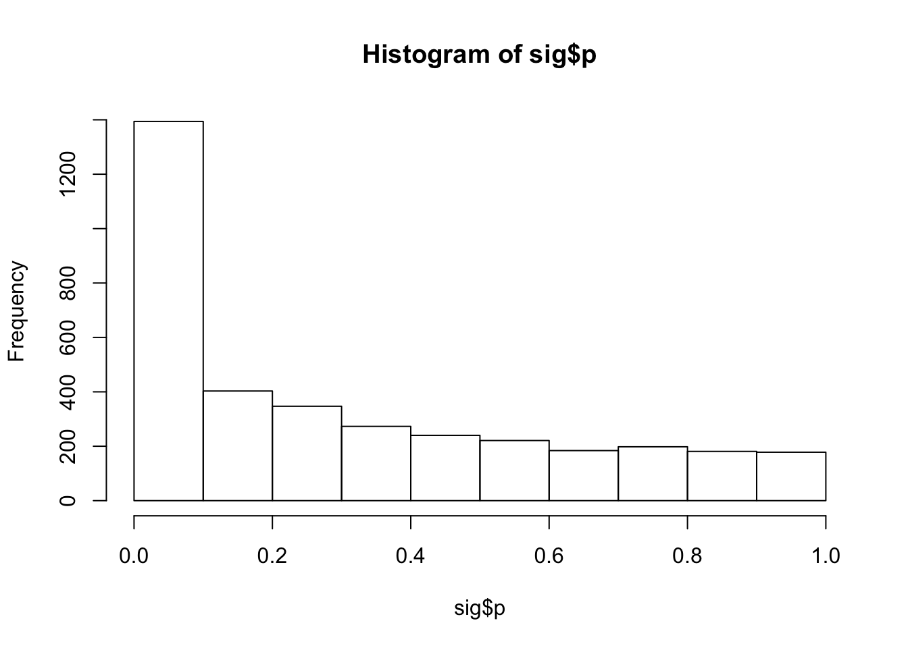
| Version | Author | Date |
|---|---|---|
| c1d660d | Benjmain Fair | 2019-12-04 |
#histogram of Pvalues
hist(sig$p)
#how many significant (p.adjust < 0.1)
table(sig$p.adjust<0.1) %>% kable()| Var1 | Freq |
|---|---|
| FALSE | 2860 |
| TRUE | 759 |
# merge significance and cluster tables
leafcutter.merged <- effect_sizes %>%
mutate(cluster=gsub("(.+?:).+?:.+?:(clu.+?)", "\\1\\2", intron, perl=T)) %>%
mutate(junc_id=gsub("(.+?:.+?:.+?):clu.+", "\\1", intron, perl=T)) %>%
left_join(sig, by="cluster")
# volcano plot of cluster-pvalues and largest within-cluster-delta-psi
leafcutter.merged %>%
mutate(abs.deltapsi = abs(deltapsi)) %>%
group_by(cluster) %>%
top_n(n=1, abs.deltapsi) %>%
mutate(sig=p.adjust<0.05) %>%
ggplot(aes(x=deltapsi, y=-log10(p), color=sig)) +
geom_point(alpha=0.05) +
theme_bw()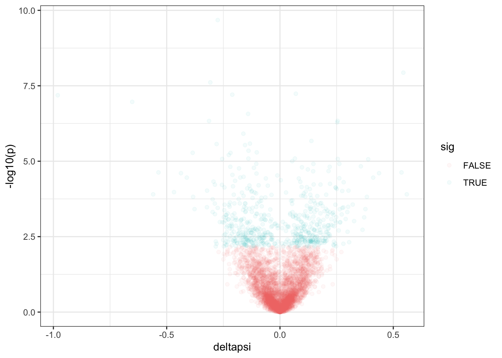
let’s do a gsea to see what genes have differentially spliced clusters of introns. For this, we need an ordered gene list, with each gene appearing once. Since the biological question related to this is what are the genes or gene sets that are getting disrupted to cause the organismal phenotype, i think it is important to consider not just significance (P-value) but also effect size, perhaps as measured by delta-psi. Since significane and effect size can be quite different in a splicing analysis (see volcano plot above) because of low read counts on some junctions, let’s first filter out all non-significant splicing changes (to filter out the noisy effect size estimates) Then let’s make an ordered list based on the maximum delta-PSI for each gene.
#let's use a fairly permissive significance threshold to be more inclusive. how about FDR>0.3
hist(leafcutter.merged$p.adjust)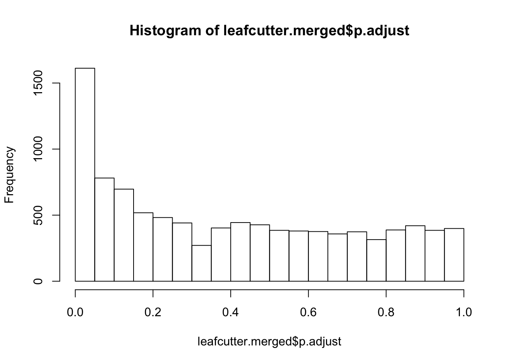
| Version | Author | Date |
|---|---|---|
| c1d660d | Benjmain Fair | 2019-12-04 |
#filter and get max delta-psi for each gene. Keep in mind we need to filter out non-valid genes for the clusters or introns that have more than one gene listed in the genes column
OrderedGeneList <- leafcutter.merged %>%
filter(p.adjust<0.3) %>%
mutate(abs.deltapsi = abs(deltapsi)) %>%
group_by(genes) %>%
top_n(n=1, abs.deltapsi) %>%
filter(!grepl(",",genes)) %>%
arrange(desc(abs.deltapsi)) %>%
dplyr::select(genes, abs.deltapsi) %>%
deframe()
head(OrderedGeneList) PQBP1 FIGNL1 KANSL1 KANSL1 RNF220 PARP2
0.9807278 0.6522834 0.5597076 0.5597076 0.5443519 0.5362952 gsea.results <- gseGO(OrderedGeneList, ont="ALL", OrgDb=org.Hs.eg.db, keyType='SYMBOL', nPerm=100000)
gsea.results.df <- as.data.frame(gsea.results)
dim(gsea.results.df)[1] 0 9No significant GSEA results at the default P.adjust<0.5 threshold.
Ok, besides identifying the genes (or kinds of genes) through which the disease phenotype is potentially mediated, maybe the other questions I should be asking is what kinds of intron features distinguish differentially spliced introns, which may be more enlightening about general splicing mechanisms due to this DHX38 genotype.
I have scored the 5’ss and 3’ss motifs for each intron tested using a position specific score matrix based on annotated introns. I additionally used svm-bpfinder to score the best computationally predicted branch for each intron. I also annotated whether each intron is annotated, an unanottated alt3’ss, an unanotated alt5’ss, an unannotated new pairing of splice sites, or new intron (unannotated 5’ and unannotated 3’ss). All of that work is hidden in the code section and output into a file in output.
Let’s see if any of those features correlate with differentially expressed introns. If there is the DHX38 mutations preferentially activates less consensus splice sites for example, I expect the directionality to be consistent. Therefore, I will correlate those scores with the logeff (polarized effect size) for each intron, for significant introns.
#read intron features
IntronFeatures <- read.table("../output/IntronFeatures.txt.gz", sep='\t', header=T)
head(IntronFeatures) %>% kable()| Intron | strand | type | donor_seq | DonorScore | acceptor_seq | AcceptorScore | eqez | ss_dist | bp_seq | bp_scr | y_cont | ppt_off | ppt_len | ppt_scr | svm_scr |
|---|---|---|---|---|---|---|---|---|---|---|---|---|---|---|---|
| 1_11671_12009_+ | + | NewIntron | CAGGTGAAG | 7.509 | GCTGTGGTCTTCATCTGCAGGTG | 9.120 | 29 | 22 | tcttgatgc | 0.7736716 | 0.7058824 | 9 | 9 | 19 | 0.5400024 |
| 1_11844_12009_+ | + | NewIntron | CGGGTATCA | 2.853 | GCTGTGGTCTTCATCTGCAGGTG | 9.120 | 29 | 22 | tcttgatgc | 0.7736716 | 0.7058824 | 9 | 9 | 19 | 0.5400024 |
| 1_12721_13220_+ | + | AnnotatedSpliceSite | GAGGTGAGA | 9.498 | TAGCCTCTGTTCCCACGAAGGCA | 4.753 | 17 | 19 | gccttagcc | -0.9155434 | 0.7857143 | 2 | 13 | 22 | 0.3754140 |
| 1_14829_14929_- | - | NewIntron | CTTGTAATT | 3.934 | ACTCAGCCTTTTCCCTCCAGGCA | 11.310 | 14 | 20 | ccctcactc | 2.5121196 | 0.8666667 | 1 | 15 | 28 | 1.8628447 |
| 1_14829_15020_- | - | NewIntron | AAGGTGGGC | 7.731 | ACTCAGCCTTTTCCCTCCAGGCA | 11.310 | 14 | 20 | ccctcactc | 2.5121196 | 0.8666667 | 1 | 15 | 28 | 1.8628447 |
| 1_14829_14969_- | - | NewIntron | AGGGTAGGA | 6.363 | ACTCAGCCTTTTCCCTCCAGGCA | 11.310 | 14 | 20 | ccctcactc | 2.5121196 | 0.8666667 | 1 | 15 | 28 | 1.8628447 |
#Check an example of a good donor score and a bad donor score
#Good splice donor (positions -3 to +6)
IntronFeatures %>%
top_n(1, DonorScore) %>% head(1) %>%
dplyr::select(donor_seq, DonorScore) donor_seq DonorScore
1 CAGGTAAGT 12.6#Bad splice donor
IntronFeatures %>%
top_n(-1, DonorScore) %>% head(1) %>%
dplyr::select(donor_seq, DonorScore) donor_seq DonorScore
1 TTCATTCCA -15.08# Check that the number of types of unannotated splicing is similar in both strands. Sometimes bugs related to coordinates produce wonky results
IntronFeatures %>%
filter(strand=="-") %>%
pull(type) %>% table().
Alt3ss Alt5ss AltPairingOfSites AnnotatedSpliceSite
23770 18569 14989 105919
NewIntron
22055 IntronFeatures %>%
filter(strand=="+") %>%
pull(type) %>% table().
Alt3ss Alt5ss AltPairingOfSites AnnotatedSpliceSite
24451 18695 15300 108186
NewIntron
23013 # merge the intron features with the leafcutter results and filter for the significantly differentially spliced introns that have the greatest effect size within cluster
leafcutter.merged.w.features <- leafcutter.merged %>%
separate(junc_id, c("chrom", "start", "stop"), sep = ":") %>%
mutate(newChrom=sub("chr", "", chrom),
newStop=as.numeric(stop)-1,
strand=str_sub(intron, start=-1)) %>%
mutate(IntronID=str_c(newChrom, start, newStop, strand, sep="_")) %>%
dplyr::select(-c("chrom", "start", "stop", "newStop", "newChrom")) %>%
mutate(abs.effectsize = abs(logef)) %>%
group_by(cluster) %>%
top_n(n=1, abs.effectsize) %>%
ungroup() %>%
filter(p.adjust<0.2) %>%
left_join(IntronFeatures, by=c("IntronID"="Intron"))
# Are specific types of unannotated splicing more prevalent?
leafcutter.merged.w.features %>%
pull(type) %>% table().
Alt3ss Alt5ss AltPairingOfSites AnnotatedSpliceSite
68 34 55 1406
NewIntron
10 colnames(leafcutter.merged.w.features) [1] "intron" "logef" "H" "A"
[5] "deltapsi" "cluster" "status" "loglr"
[9] "df" "p" "p.adjust" "genes"
[13] "strand.x" "IntronID" "abs.effectsize" "strand.y"
[17] "type" "donor_seq" "DonorScore" "acceptor_seq"
[21] "AcceptorScore" "eqez" "ss_dist" "bp_seq"
[25] "bp_scr" "y_cont" "ppt_off" "ppt_len"
[29] "ppt_scr" "svm_scr" # Set up features and effect sizes into a cleaner data frame
IntronFeaturesAndEffectSizes <- leafcutter.merged.w.features %>%
dplyr::select(IntronID, logef, DonorScore, AcceptorScore, ss_dist, bp_scr, ppt_len, ppt_scr, svm_scr) %>%
column_to_rownames("IntronID")
# See if there is any correlations
CorrelationsWithFeatures <- corr.test(x=IntronFeaturesAndEffectSizes[,1],
y=IntronFeaturesAndEffectSizes[,-1],
method="spearman",
adjust="none")
# table of spearmans r, pvalue, and n
data.frame(r= t(CorrelationsWithFeatures$r), p=t(CorrelationsWithFeatures$p), n=t(CorrelationsWithFeatures$n)) %>% kable()| r | p | n | |
|---|---|---|---|
| DonorScore | -0.0254915 | 0.3123134 | 1573 |
| AcceptorScore | 0.0164397 | 0.5146981 | 1573 |
| ss_dist | 0.0098841 | 0.7060034 | 1459 |
| bp_scr | -0.0123674 | 0.6369214 | 1459 |
| ppt_len | 0.0214754 | 0.4123965 | 1459 |
| ppt_scr | 0.0160727 | 0.5395862 | 1459 |
| svm_scr | -0.0138876 | 0.5960885 | 1459 |
None of the features tested seem to correlate with the effect size of largest-effect introns in significant clusters.
Check if the significant positive effect-size splicing changes have more cryptic 5’ss, or more cryptic 3’ss than negative effect-size splicing changes.
When doing this analysis, some people think in terms of deltapsi, some people might think in terms of a different metric of effect size. Let’s look at both.
# leafcutter's logef effect size, versus deltapsi
qplot(leafcutter.merged.w.features$logef, leafcutter.merged.w.features$deltapsi) + theme_bw()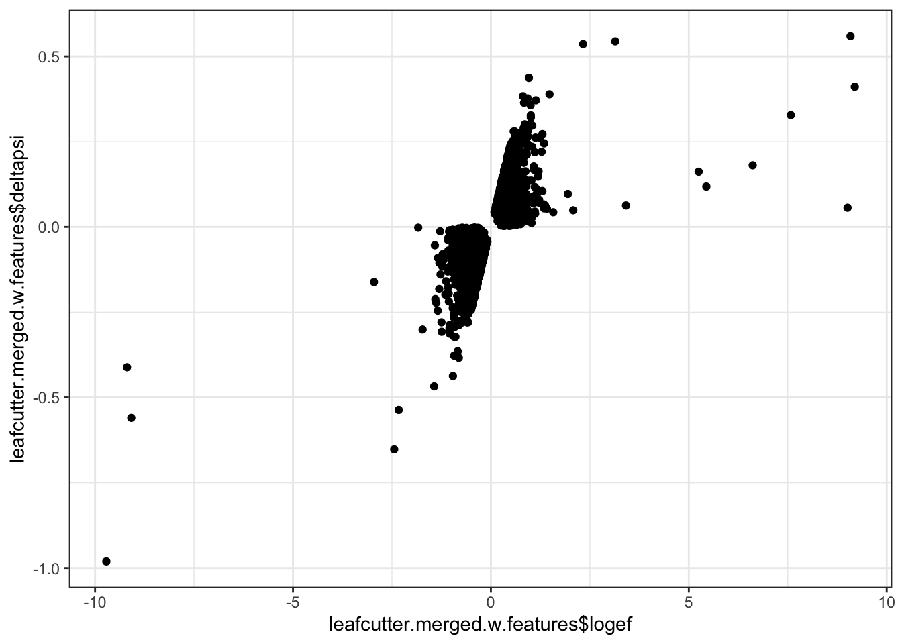
| Version | Author | Date |
|---|---|---|
| 0d7521b | Benjmain Fair | 2019-12-04 |
#significant positive deltapsi introns
leafcutter.merged.w.features %>%
filter(deltapsi > 0) %>%
pull(type) %>% table().
Alt3ss Alt5ss AltPairingOfSites AnnotatedSpliceSite
28 12 25 709
NewIntron
6 #significant negative deltapsi introns
leafcutter.merged.w.features %>%
filter(deltapsi < 0) %>%
pull(type) %>% table().
Alt3ss Alt5ss AltPairingOfSites AnnotatedSpliceSite
40 22 30 697
NewIntron
4 leafcutter.merged.w.features %>%
ggplot(aes(x=deltapsi, color=type)) +
stat_ecdf(geom = "step") +
ylab("Cumulative frequency") +
theme_bw()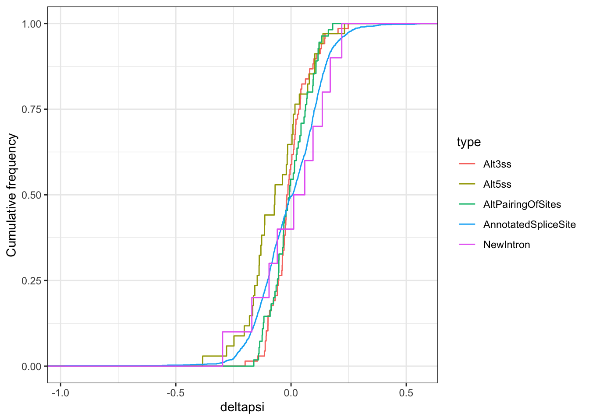
| Version | Author | Date |
|---|---|---|
| 0d7521b | Benjmain Fair | 2019-12-04 |
Maybe cryptic (unannotated) 5’ss stick out? In other words, for cryptic 5’ss, ~65% have negative effect sizes, and ~35% have positive effect sizes. For most other unannotated splicing types it is closer to 50/50. Let’s more explicitly if this difference is significant.
The null hypothesis here is that any given type of splicing will not significantly deviate from median of 0 effect size (equal number of positive effects as negative effects). Wilcox.test to test with null as mu=0 should work.
## are alt 5'ss downregulated?
wilcox.test(
leafcutter.merged.w.features %>%
filter(type=="Alt5ss") %>% pull(deltapsi))
Wilcoxon signed rank test with continuity correction
data: leafcutter.merged.w.features %>% filter(type == "Alt5ss") %>% pull(deltapsi)
V = 150.5, p-value = 0.01226
alternative hypothesis: true location is not equal to 0# same test but using logef instead of deltapsi
wilcox.test(
leafcutter.merged.w.features %>%
filter(type=="Alt5ss") %>% pull(logef))
Wilcoxon signed rank test with continuity correction
data: leafcutter.merged.w.features %>% filter(type == "Alt5ss") %>% pull(logef)
V = 166.5, p-value = 0.02567
alternative hypothesis: true location is not equal to 0## are alt 3'ss upregulated?
wilcox.test(
leafcutter.merged.w.features %>%
filter(type=="Alt3ss") %>% pull(deltapsi)
)
Wilcoxon signed rank test with continuity correction
data: leafcutter.merged.w.features %>% filter(type == "Alt3ss") %>% pull(deltapsi)
V = 1001, p-value = 0.2947
alternative hypothesis: true location is not equal to 0# same test but using logef instead of deltapsi
wilcox.test(
leafcutter.merged.w.features %>%
filter(type=="Alt3ss") %>% pull(logef)
)
Wilcoxon signed rank test with continuity correction
data: leafcutter.merged.w.features %>% filter(type == "Alt3ss") %>% pull(logef)
V = 1058, p-value = 0.4842
alternative hypothesis: true location is not equal to 0Hmm. maybe there is something here with alt 5’ss. Looks like cryptic (unannotated) 5’ss have a more negative effect size than expected by chance, meaning less cryptic 5’ss in the affected sample. Considering all the exploration I’ve been doing, and without multiple hypothesis correction in many cases this might or might not be real.
Note that thus far, all my alternative splicing type classifications are based on identifying splice donors and splice acceptors that aren’t in annotated transcripts (Ensembl annotations)… In other words, alternative 5’ss events that are annotated (most identified alternative splicing is annotated), are simply classified as “annotated”. But if the effect about downregulation of cryptic 5’ss is real, I also expect the minor intron for annotated alternative 5’ss to decrease in the affected. So let’s try to classify splicing types regardless of annotations, at least for clusters with only two or three introns where this is relatively straightforward:
For example, for a cluster with two introns, if the splice donor coordinates is listed twice in the dataset and the splice acceptor coordinates is listed once, we know it is alternative 5’ss usage.
#Reclassify splicing types
leafcutter.merged.AS.reclassified <- leafcutter.merged %>%
dplyr::select(intron) %>%
separate(intron, into=c("chrom", "start", "stop", "cluster"), sep=":", remove=F) %>%
mutate(strand=sub("clu_\\d+_(.+)", "\\1", cluster)) %>%
mutate(
SpliceDonorCoord=case_when(
strand=="+" ~ paste(chrom, start, strand),
strand=="-" ~ paste(chrom, stop, strand)),
SpliceAcceptorCoord=case_when(
strand=="+" ~ paste(chrom, stop, strand),
strand=="-" ~ paste(chrom, start, strand))) %>%
dplyr::select(intron, cluster, SpliceDonorCoord,SpliceAcceptorCoord) %>%
add_count(cluster, name="IntronsPerCluster") %>%
add_count(SpliceDonorCoord, name="SpliceDonorCount") %>%
add_count(SpliceAcceptorCoord, name="SpliceAcceptorCount") %>%
mutate(SplicingType=case_when(
IntronsPerCluster==2 & SpliceDonorCount==2 ~ "Alt3ss",
IntronsPerCluster==2 & SpliceAcceptorCount==2 ~ "Alt5ss",
IntronsPerCluster==3 & SpliceDonorCount==2 & SpliceAcceptorCount==2 ~ "CassetteExonSkipped",
IntronsPerCluster==3 & SpliceDonorCount==1 & SpliceAcceptorCount==2 ~ "CassetteExonIncluded.DownstreamIntron",
IntronsPerCluster==3 & SpliceDonorCount==2 & SpliceAcceptorCount==1 ~ "CassetteExonIncluded.UpstreamIntron",
IntronsPerCluster==3 & SpliceDonorCount==3 & SpliceAcceptorCount==1 ~ "Alt3ss",
IntronsPerCluster==3 & SpliceDonorCount==1 & SpliceAcceptorCount==3 ~ "Alt5ss",
IntronsPerCluster>=4 ~ "Complex"
)) %>%
dplyr::select(intron, SplicingType) %>%
left_join(leafcutter.merged, by="intron")
#Number of splicing types
table(leafcutter.merged.AS.reclassified$SplicingType) %>% kable()| Var1 | Freq |
|---|---|
| Alt3ss | 2019 |
| Alt5ss | 1677 |
| CassetteExonIncluded.DownstreamIntron | 1444 |
| CassetteExonIncluded.UpstreamIntron | 1444 |
| CassetteExonSkipped | 1444 |
| Complex | 1828 |
# Check that the classifications make sense by manually inspecting some intron coordinates for a few clusters
head(leafcutter.merged.AS.reclassified) %>% kable()| intron | SplicingType | logef | H | A | deltapsi | cluster | junc_id | status | loglr | df | p | p.adjust | genes |
|---|---|---|---|---|---|---|---|---|---|---|---|---|---|
| chr1:1787053:1787322:clu_1000_- | Alt5ss | 0.2136016 | 0.9383983 | 0.9589358 | 0.0205375 | chr1:clu_1000_- | chr1:1787053:1787322 | Success | 1.9730317 | 1 | 0.0469812 | 0.1628228 | GNB1 |
| chr1:1787053:1787326:clu_1000_- | Alt5ss | -0.2136016 | 0.0616017 | 0.0410642 | -0.0205375 | chr1:clu_1000_- | chr1:1787053:1787326 | Success | 1.9730317 | 1 | 0.0469812 | 0.1628228 | GNB1 |
| chr1:1815862:1817837:clu_1001_- | CassetteExonIncluded.DownstreamIntron | -0.0975622 | 0.4873418 | 0.4832734 | -0.0040684 | chr1:clu_1001_- | chr1:1815862:1817837 | Success | 0.2795714 | 2 | 0.7561078 | 0.8609193 | GNB1 |
| chr1:1815862:1825397:clu_1001_- | CassetteExonSkipped | 0.1824135 | 0.0059958 | 0.0078669 | 0.0018710 | chr1:clu_1001_- | chr1:1815862:1825397 | Success | 0.2795714 | 2 | 0.7561078 | 0.8609193 | GNB1 |
| chr1:1817875:1825397:clu_1001_- | CassetteExonIncluded.UpstreamIntron | -0.0848513 | 0.5066623 | 0.5088598 | 0.0021974 | chr1:clu_1001_- | chr1:1817875:1825397 | Success | 0.2795714 | 2 | 0.7561078 | 0.8609193 | GNB1 |
| chr1:1825499:1839190:clu_1002_- | Complex | 0.0350052 | 0.5886054 | 0.6221619 | 0.0335565 | chr1:clu_1002_- | chr1:1825499:1839190 | Success | 4.1659670 | 3 | 0.0396273 | 0.1455953 | GNB1 |
# Check that the classifications make sense in that the fraction of junction reads for introns upstream of cassette exons should strongly positively correlate with the fraction for introns downstream of cassette exons
PlotExonSkippingSpliceRatios <- leafcutter.merged.AS.reclassified %>%
dplyr::select(cluster, SplicingType, H) %>%
filter(SplicingType %in% c("CassetteExonIncluded.DownstreamIntron", "CassetteExonIncluded.UpstreamIntron", "CassetteExonSkipped")) %>%
spread(key="SplicingType", value="H")
ggplot(PlotExonSkippingSpliceRatios, aes(x=CassetteExonIncluded.DownstreamIntron, y=CassetteExonIncluded.UpstreamIntron)) +
geom_point()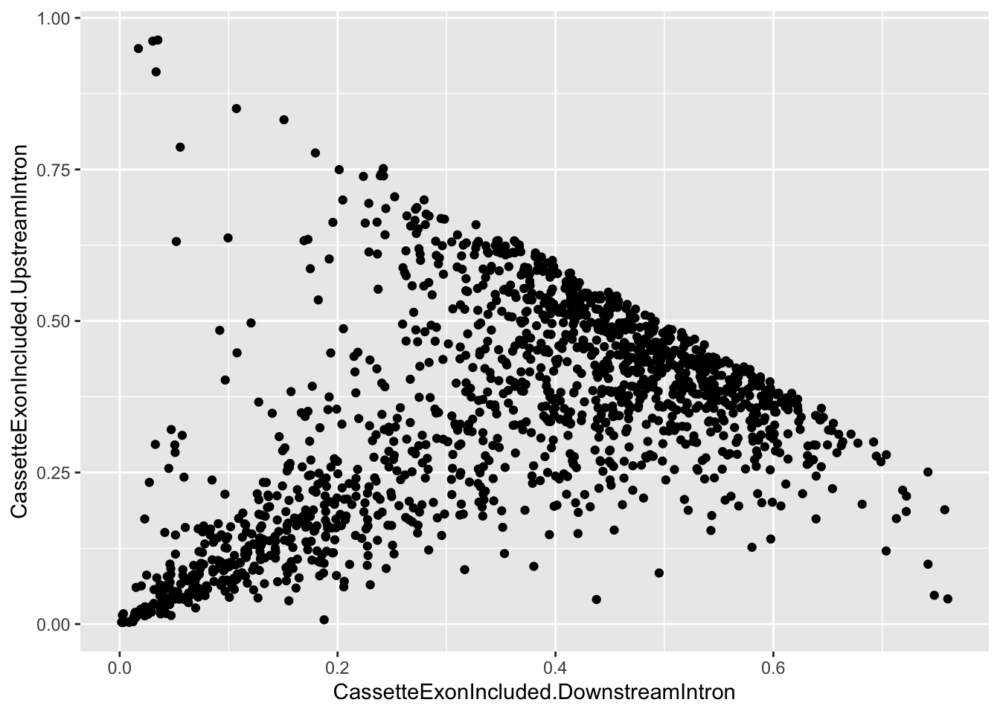
#And there should generally be anti correlation with the exon skipped isoform and either of the exon included introns
ggplot(PlotExonSkippingSpliceRatios, aes(x=CassetteExonIncluded.DownstreamIntron, y=CassetteExonSkipped)) +
geom_point()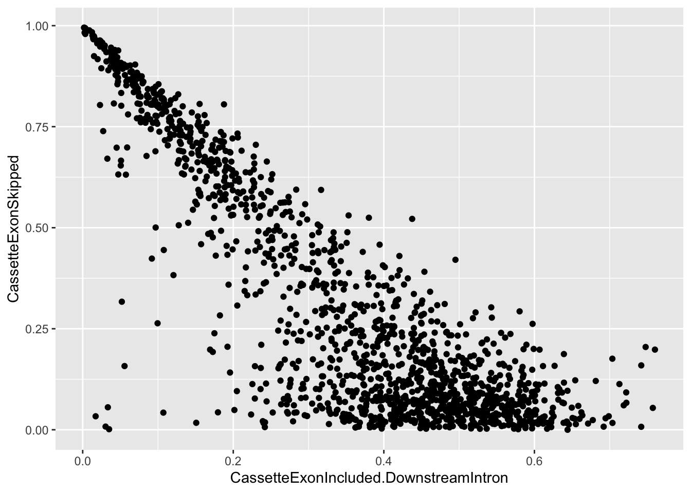
Okay from that it seems my classification of alternative splicing types makes sense. Now let’s check if the minor isoform (as assessed in healthy samples) for each splicing type is has a general polarity to effect size. Specifically, if alt5’ss have negative effect sizes.
MinorIsoforms <- leafcutter.merged.AS.reclassified %>%
filter(p.adjust<0.3) %>%
group_by(cluster) %>%
top_n(-1, H) %>%
ungroup()
#histogram of splicing fraction of minor isoforms (intron with smallest splicing fraction within cluster)
hist(MinorIsoforms$H)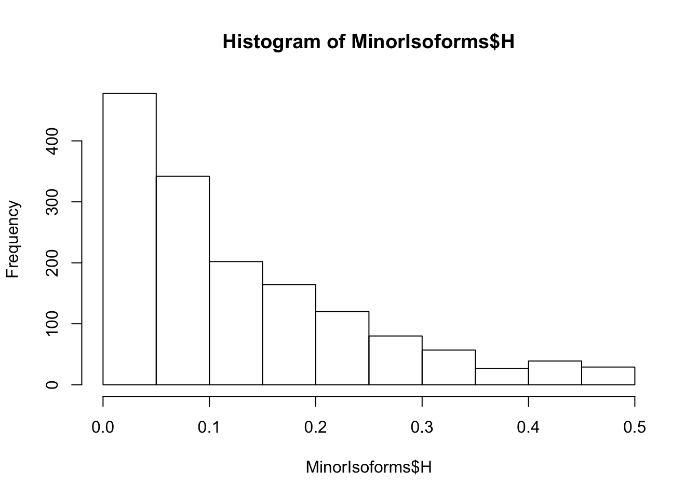
MajorIsoforms <- leafcutter.merged.AS.reclassified %>%
filter(p.adjust<0.3) %>%
group_by(cluster) %>%
top_n(1, H) %>%
ungroup()
#histogram of splicing fraction of major isoforms (intron with largest splicing fraction within cluster)
hist(MajorIsoforms$H)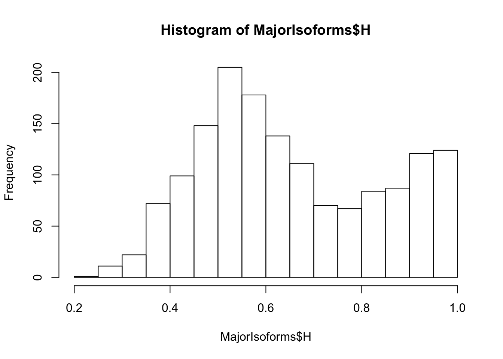
#Now make plots to get to know if minor isoform alt5'ss have generally gone down. Same for alt 3'ss.
MinorIsoforms %>%
filter(SplicingType %in% c("Alt5ss", "Alt3ss")) %>%
ggplot(aes(x=deltapsi, color=SplicingType)) +
stat_ecdf(geom = "step") +
xlim(c(-1,1))+
ylab("Cumulative frequency") +
theme_bw()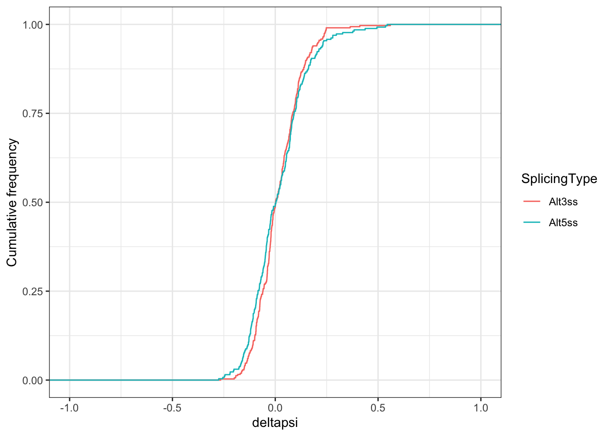
#Mirrored plot for major isoforms.
MajorIsoforms %>%
filter(SplicingType %in% c("Alt5ss", "Alt3ss")) %>%
ggplot(aes(x=deltapsi, color=SplicingType)) +
stat_ecdf(geom = "step") +
xlim(c(-1,1))+
ylab("Cumulative frequency") +
theme_bw()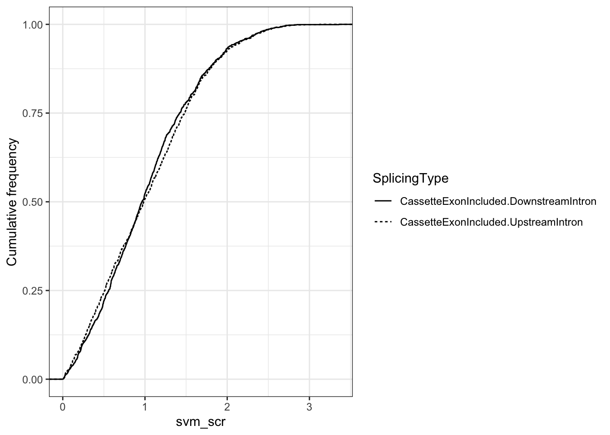
#Try exon skipping
leafcutter.merged.AS.reclassified %>%
filter(p.adjust<0.3) %>%
filter(SplicingType %in% c("CassetteExonSkipped", "CassetteExonIncluded.DownstreamIntron", "CassetteExonIncluded.UpstreamIntron")) %>%
ggplot(aes(x=deltapsi, color=SplicingType)) +
stat_ecdf(geom = "step") +
xlim(c(-1,1))+
ylab("Cumulative frequency") +
theme_bw()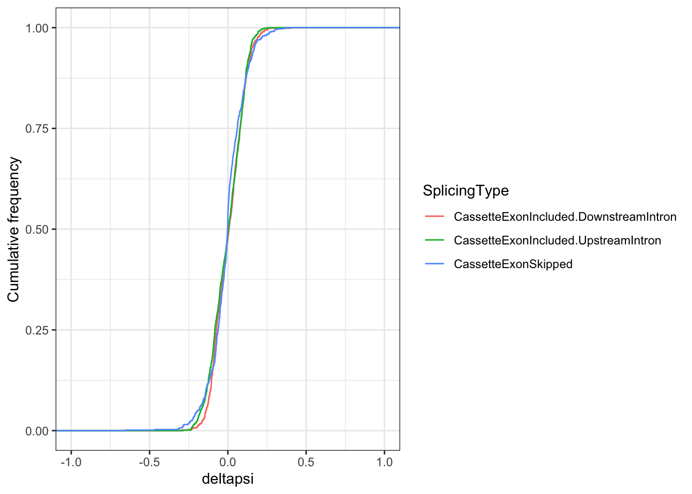
So there is no apparent difference in alt5’ss or alt3’ss usage when I considered all easily classifiable introns, regardless of annotation. In other words, the minor isoforms for 5’ss were equally up and down regulated. This is mirrored in when looking at major isoforms.
Finally, since all of this type of analysis didn’t return anything very interesting with confidence, I should browse the raw aligned read data in IGV to explore patterns that I might not have picked up on this differential splicing analysis. To aid in IGV exploration, let’s write out a bed file of the most significant clusters so we can quickly jump to the regions of interest that are differentially spliced
#bed file, with chromosome, start, stop, name, score, strand, extra info
BedFile <- leafcutter.merged.AS.reclassified %>%
dplyr::select(intron, SplicingType, logef, deltapsi, p) %>%
separate(intron, into=c("chrom", "start", "stop", "cluster"), remove=F) %>%
mutate(extra=paste(logef, deltapsi, SplicingType), score=-log10(p), strand=".") %>%
dplyr::select(chrom, start, stop, intron, score, strand, extra )
head(BedFile) %>% kable()| chrom | start | stop | intron | score | strand | extra |
|---|---|---|---|---|---|---|
| chr1 | 1787053 | 1787322 | chr1:1787053:1787322:clu_1000_- | 1.3280764 | . | 0.213601616865169 0.0205375290648846 Alt5ss |
| chr1 | 1787053 | 1787326 | chr1:1787053:1787326:clu_1000_- | 1.3280764 | . | -0.213601616865169 -0.0205375290648847 Alt5ss |
| chr1 | 1815862 | 1817837 | chr1:1815862:1817837:clu_1001_- | 0.1214163 | . | -0.097562244907946 -0.00406844605505857 CassetteExonIncluded.DownstreamIntron |
| chr1 | 1815862 | 1825397 | chr1:1815862:1825397:clu_1001_- | 0.1214163 | . | 0.182413519865342 0.00187101753656291 CassetteExonSkipped |
| chr1 | 1817875 | 1825397 | chr1:1817875:1825397:clu_1001_- | 0.1214163 | . | -0.0848512749573959 0.00219742851849558 CassetteExonIncluded.UpstreamIntron |
| chr1 | 1825499 | 1839190 | chr1:1825499:1839190:clu_1002_- | 1.4020050 | . | 0.0350051514604137 0.0335565204053495 Complex |
write.table(BedFile, file="../output/DiffSplicingRegions.bed", sep='\t', row.names = F, col.names = F, quote=F)Found a fair number of alternative splicing events significantly different between the two groups of samples. Though, with the given study design it is unclear which if any of these is due to the DHX38 mutations. Couldn’t find any type of alternative splicing that is particularly enriched. Didn’t find any correlations with splice site motif strength.
sessionInfo()R version 3.6.1 (2019-07-05)
Platform: x86_64-apple-darwin15.6.0 (64-bit)
Running under: macOS Catalina 10.15.1
Matrix products: default
BLAS: /Library/Frameworks/R.framework/Versions/3.6/Resources/lib/libRblas.0.dylib
LAPACK: /Library/Frameworks/R.framework/Versions/3.6/Resources/lib/libRlapack.dylib
locale:
[1] en_US.UTF-8/en_US.UTF-8/en_US.UTF-8/C/en_US.UTF-8/en_US.UTF-8
attached base packages:
[1] parallel stats4 stats graphics grDevices utils datasets
[8] methods base
other attached packages:
[1] corrplot_0.84 psych_1.8.12 enrichplot_1.4.0
[4] org.Hs.eg.db_3.8.2 AnnotationDbi_1.46.1 IRanges_2.18.3
[7] S4Vectors_0.22.1 Biobase_2.44.0 BiocGenerics_0.30.0
[10] clusterProfiler_3.12.0 knitr_1.26 forcats_0.4.0
[13] stringr_1.4.0 dplyr_0.8.3 purrr_0.3.3
[16] readr_1.3.1 tidyr_1.0.0 tibble_2.1.3
[19] ggplot2_3.2.1 tidyverse_1.2.1
loaded via a namespace (and not attached):
[1] fgsea_1.10.1 colorspace_1.4-1 ellipsis_0.3.0
[4] ggridges_0.5.1 rprojroot_1.3-2 qvalue_2.16.0
[7] fs_1.3.1 rstudioapi_0.10 farver_1.1.0
[10] urltools_1.7.3 graphlayouts_0.5.0 ggrepel_0.8.1
[13] bit64_0.9-7 lubridate_1.7.4 xml2_1.2.2
[16] splines_3.6.1 mnormt_1.5-5 GOSemSim_2.10.0
[19] polyclip_1.10-0 zeallot_0.1.0 jsonlite_1.6
[22] workflowr_1.5.0 broom_0.5.2 GO.db_3.8.2
[25] ggforce_0.3.1 BiocManager_1.30.9 compiler_3.6.1
[28] httr_1.4.1 rvcheck_0.1.6 backports_1.1.5
[31] assertthat_0.2.1 Matrix_1.2-17 lazyeval_0.2.2
[34] cli_1.1.0 later_1.0.0 tweenr_1.0.1
[37] htmltools_0.4.0 prettyunits_1.0.2 tools_3.6.1
[40] igraph_1.2.4.1 gtable_0.3.0 glue_1.3.1
[43] reshape2_1.4.3 DO.db_2.9 fastmatch_1.1-0
[46] Rcpp_1.0.2 cellranger_1.1.0 vctrs_0.2.0
[49] nlme_3.1-142 ggraph_2.0.0 xfun_0.11
[52] rvest_0.3.5 lifecycle_0.1.0 DOSE_3.10.2
[55] europepmc_0.3 MASS_7.3-51.4 scales_1.0.0
[58] tidygraph_1.1.2 hms_0.5.2 promises_1.1.0
[61] RColorBrewer_1.1-2 yaml_2.2.0 memoise_1.1.0
[64] gridExtra_2.3 UpSetR_1.4.0 triebeard_0.3.0
[67] stringi_1.4.3 RSQLite_2.1.2 highr_0.8
[70] BiocParallel_1.18.1 rlang_0.4.1 pkgconfig_2.0.3
[73] evaluate_0.14 lattice_0.20-38 labeling_0.3
[76] cowplot_1.0.0 bit_1.1-14 tidyselect_0.2.5
[79] plyr_1.8.4 magrittr_1.5 R6_2.4.1
[82] generics_0.0.2 DBI_1.0.0 foreign_0.8-72
[85] pillar_1.4.2 haven_2.2.0 whisker_0.4
[88] withr_2.1.2 modelr_0.1.5 crayon_1.3.4
[91] rmarkdown_1.17 viridis_0.5.1 progress_1.2.2
[94] grid_3.6.1 readxl_1.3.1 data.table_1.12.6
[97] blob_1.2.0 git2r_0.26.1 digest_0.6.22
[100] httpuv_1.5.2 gridGraphics_0.4-1 munsell_0.5.0
[103] viridisLite_0.3.0 ggplotify_0.0.4